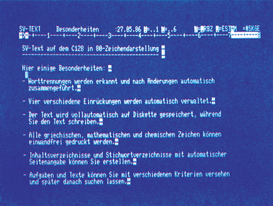
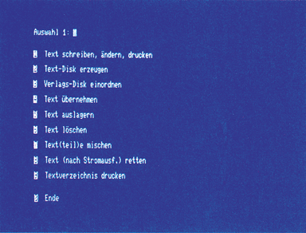
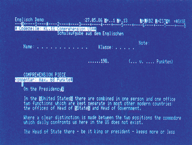
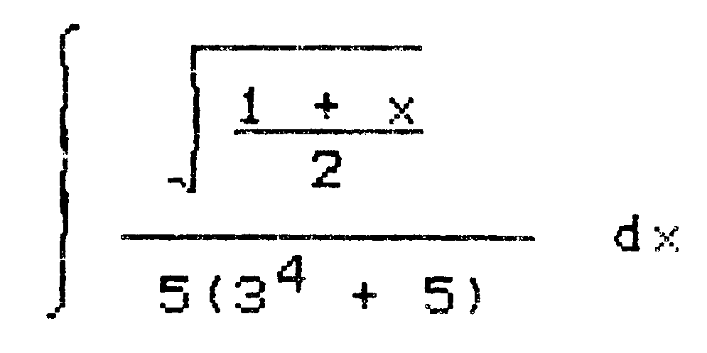
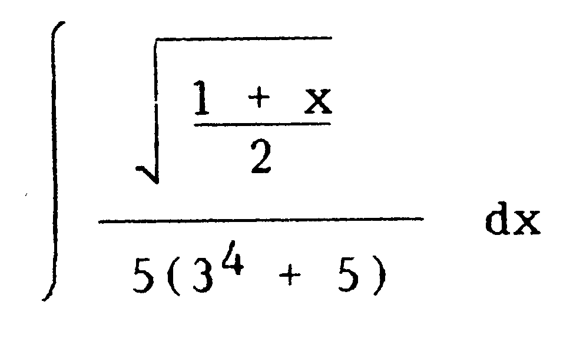
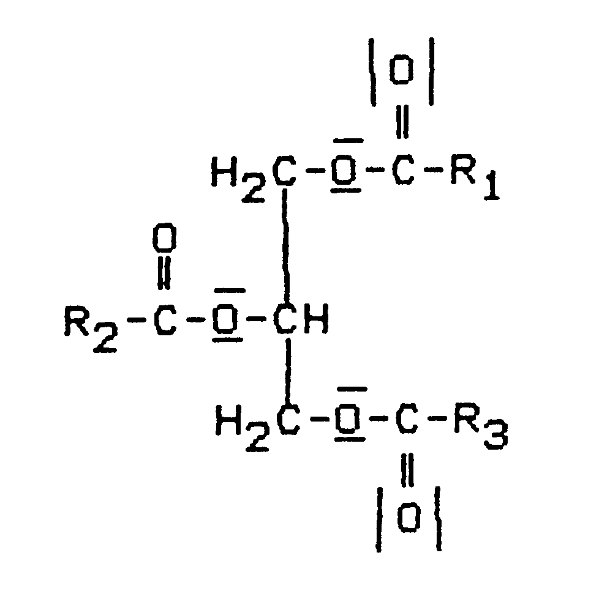

EDV für Lehrer
Wollen Sie eine Aufgabensammlung anlegen, eine wissenschaftliche Ausarbeitung oder ein Buch schreiben? »EDV für Lehrer« verspricht Ihnen dann einiges. Wir haben das System getestet und zeigen Ihnen, was Sie damit machen können.
Unter »EDV für Lehrer« verbirgt sich ein lange erarbeitetes Konzept. Das Herz ist eine Textverarbeitung, die man als ungewöhnlich bezeichnen kann. Ungewöhnlich, weil es einer gewissen Gewöhnung bedarf, damit umzugehen, und weil Außergewöhnliches geboten wird (Bild 1), wennman sich an die Textverarbeitung gewöhnt hat. Doch zuerst ein kurzer Überlick.

Angeboten wird unter »EDV für Lehrer« ein komplettes System mit Textverarbeitung, zwei besondere Zelchensätze für Mathematik und Chemie/Biologie, ein Drucker (Speedy), auf den die speziellen Zeichensätze angepaßt sind und eine ganze Anzahl fertiger Textdisketten, mit denen Sie sich nach und nach eine flexibel verwertbare Aufgabensammlung zulegen können.
Aber auch einen Monitor und einen Typenraddrucker finden Sie beim Stark-Verlag unter dem Angebot »EDV für Lehrer«. Sie können sich also aussuchen, ob Sie eine komplette Konfiguration mit Hardware oder nur die Software erwerben wollen. Aber schauen wir uns zunächst die Textverarbeitung mit dem Namen »SV-Text« an. Sie wird in zwei Varianten angeboten: eine Normalversion (98 Mark) und eine Luxusvariante, genannt »Large-MC« (198 Mark). Beide Versionen sind wahlweise für den C 64 (40-Zeichen-Darstellung) und den C 128 (80-Zeichen-Darstellung) erhältlich. Für 298 Mark wird auch die Large-MC-Version für die Commodore 8000er-Serie angeboten. Genau unter die Lupe genommen haben wir die Luxus-Ausführungfür den C 128.
Wenn Sie das Programm von der kopiergeschützten Diskette geladen und dasaktuelle Datum eingegeben haben, erscheint auf dem Bildschirm das Hauptmenü (Bild 2). Ist die System-Dis- kette beim Anschalten des Computers schon in der Floppy, so wird das Programm automatisch gebootet. Aber nun zu den einzelnen Unterpunkten des Hauptmenüs:

- Text schreiben, ändern, drucken: Hier kommen Sie über ein Untermenü in die normale Textbearbeitung.
- Text-Disk erzeugen: Unter diesem Punkt können Sie eine neue Diskette formatieren und in Ihr System eingliedern. Nur solche Disketten werden von dem Textsystem bearbeitet.
- Verlagsdisk einordnen: Ein recht interessanter Punkt. Vom Stark-Verlag werden die verschiedensten Arbeits- und Aufgaben-Disketten vertrieben. Solche Disketten sollen auch in Zukunft ständig weiterentwickelt werden. Unter diesem Menüpunkt können Sie diese Disketten in Ihr eigenes System einbinden. Die Text-Diskette wird dabei mit einem besonderen Code versehen, der genau Ihrer System-Diskette entspricht. Kein anderer kann Ihre Text-Diskette dann benutzen.
- Text übernehmen: Unter diesem Menüpunkt können Sie andere CBM-Dateien auf eine Text-Diskette übertragen.
- Text auslagern: Eine Spezialität dieses Programms. Wir wollen an dieser Stelle auch schon erwähnen, daß der Text während des Eingebens in kleinen Abschnitten automatisch gespeichert wird. Wenn einmal der Platz auf einer Diskette nicht mehr reicht, so können Sie den gesamten Text auf eine andere Disk auslagern. Aber auch beliebige andere Textteile können ausgelagert werden.
Es zeigen sich unter diesem Menüpunkt auch noch andere enorme Stärken des Programms. Sie können nämlich bestimmte Textzeilen markieren, beispielsweise Kapitelüberschriften, und diese automatisch zu einer Inhaltsangabe zusammenstellen. In drei Arbeitsschritten läßt sich sogar ein alphabetisch sortiertes Stichwort-Verzeichnis mit Seiten- und Zeilenangabe erstellen. Das sind schon Leistungen, die selbst bei Textverarbeitungen für größere Computer selten zu finden sind. Im Bild 3 sehen Sie beispielsweise die Worte »United States« und »State« markiert, um später ein Stichwortverzeichnis zu erstellen.

Für Lehrer gibt es hier auch noch einen besonderen Leckerbissen. Sie können beliebig lange Textabschnitte mit einer Codezeile versehen (Bild 3 oben), die frei bestimmbare Kriterien enthält. Unter dem Menüpunkt 5lassen sich auch verschiedene Kriterien logisch verknüpfen (und, oder, nicht). Anschließend werden aus dem Text alle Abschnitte mit der entsprechenden Kriterienkombination herausgefiltert und in ein neues Text-File gespeichert. Auf diese Weise können Sie aus einer Aufgabensammlung immer wieder neue Kombinationen zusammenstellen. Lehrer haben aufso etwas sicherlich schon lange gewartet.
All die unter diesem Menüpunkt beschriebenen Funktionen sind allerdings nur in der Luxusversion für 198 Mark enthalten.
\6. Text löschen: Außer bei Verlags-Disketten können Sie hier beliebige Dateien von Ihren Text-Disketten löschen.
\7. Text(teil)e mischen: Aus bis zu 32 Textteilen wird hier ein neuer Text zusammengemischt.
\8. Text retten: Kennen Sie den entsetzten Aufschrei, wenn der Strom ausfällt während Sie schreiben? Die letzten fünf Seiten sind »futsch«! Damit ist jetzt Schluß, denn wie schon erwähnt wird der Text in kleinen Abschnitten laufend gespeichert. Beider Floppy 1541 macht sich dabei ein Speeder (verkürzt das Laden und Speichern ganz erheblich) sehr angenehm bemerkbar, um lästige Wartezeiten abzuschaffen. Aber zurück zum Stromausfall.
Erst wenn Sie den Text mit der Funtionstaste <F2> sichern oder die Texteingabe mit dem entspechenden Befehl beenden, sind auch alle notwendigen Text-Parameter gespeichert. Da Sie dies vor dem Stromausfall vermutlich nicht getan haben, fehlt Ihnen zwar schlimmstenfalls lediglich der letzte kleine Textabschnitt, allerdings sind die Parameter noch nicht vorhanden. Unter diesem Menüpunkt werden nun diese Parameter aus dem vorhandenen Text zusammengesucht und anschließend gespeichert. Ein Service, der manchen Ärger erspart.
\9. Textverzeichnis drucken: Hier geben Sie den Inhalt Ihrer Text-Diskette über den Drucker aus. Darin enthalten ist auch der DiskTitel, das Datum der letzten Bearbeitung sowie der noch verfügbare Platz. Auch den Disketten-Titel können Sie hier ändern.
Soweit der Überblick anhand des Hauptmenüs. Über den Menüpunkt 1 wollen wir jetzt in die eigentliche Textbearbeitung einsteigen.
Jede Menge Kommandos
Im Gegensatz zu Vizawrite, wo Kommandos und Funktionen mit den Control- und Commodore-Tasten aufgerufen werden, nutzt diese Textverarbeitung dafür die Funktionstasten. Bei acht Funktionstasten steht Ihnen natürlich eine stattliche Anzahl von Befehlen zur Verfügung. Am Anfang ist es auch gar nicht so einfach, den Überblick zugewinnen. Es bedarf schon einiger Zeit der Gewöhnung, um schnell und problemlos mit allen Funktionen umgehen zu können. Wer vorher andere Textverarbeitungen benutzt hat, wird sich erheblich umstellen müssen.
Mit der Fülle von Befehlen bietet das Programm alle Funktionen, die üblicherweise in einer Textverarbeitung enthalten sein sollten. Wir werden daher die einzelnen Möglichkeiten nur kurz erwähnen. Besonderheiten wollen wir allerdings herausstellen.
Unter <F1> stellen Sie Arbeitsparameter ein oder ändern sie. Linksbündige, rechtsbündige sowie zentrierte Schrift und Blocksatz sind auch auf dem Bildschirm zu sehen.
Fünf verschiedene Umbruchmodi sind wählbar. Unter »E« (endlos) wird ohne Rücksicht auf Rechtschreibung am Zeilenende getrennt. Wer eine DIN-Schreibmaschine gewohnt ist, kann diese unter »S« simulieren. Haben Sie <T> (Tabellen) gewählt, so wird nach jedem Zeilenende auf eine vorher eingegebene Einrückposition (Tabulator) gesprungen. Beim automatischen Umbruch »A« werden wie bei den meisten Textverarbeitungen ganze Worte, die nicht mehr in eine Zeile passen, in die nächste Zeile übernommen. Ist »M« (manuell) eingestellt, macht das Programm auf Worttrennungen aufmerksam, wenn sich vor dem rechten Zeilenrand mehr als 4 Leerstellen ergeben würden. Für den Blocksatz ist dies sehr sinnvoll, da keine großen Textlücken entstehen.
Ferner können Sie unter <F1> auf einfache Weise die Randeinstellungen ändern, für den Umbruch »I« und »S« die Randeinstellung löschen und denlinken Rand schützen. Letzteres ist nützlich, wenn beispielsweise nach links herausgezogene Bezifferungen (l., 2. etc) nicht gelöscht werden sollen.
Ändern lassen sich auch die Bildschirmfarben sowie Datum und Titel der Textdatel.
Im Großschreibmodus unter <F1> werden Zahlen wie im normalen Modus geschrieben, nicht die Zeichen darüber. Mit dem Korrektur- und Einfügemodus werden vorhandene Texte überarbeitet.
Im Sonderzeichenmodus ist jeder Taste ein entsprechendes Sonderzeichen für den Drucker zugeordnet.
Mit dem Kommando »Kapitelstruktur« wird ein Text in Kapitel eingeteilt. Dabeisind die Seiten innerhalb eines Kapitels von 1 beginnend fortlaufend numeriert.
Ein letztes, sehr interessantes Kommando unter <F1> ist: Einrückposition eingeben. Vier verschiedene Einrücktiefen lassen sich automatisch verwalten. Selbst bei nachträglichen Einfügungen wird die jeweilige Einrücktiefe beibehalten. Die entsprechende Textstruktur ist auf dem Bildschirm zu sehen.
Mit der Funktionstaste <F2> sichern Sie den Text auf Diskette. Das bedeutet, derrestliche Text und die Parameter werden gespelchert. Die Disketten-Datei bleibt jedoch zur weiteren Texteingabe geöffnet. Da Korrekturen und Ergänzungen nicht automatisch gespeichert werden, sollten Sie auch diese sichern.
Unter der Funktionstaste <F3> werden Texte auf verschiedene Weise verändert. Beliebige Textbereiche lassen sich kopieren, verschieben oder löschen. Der Text kann nach bestimmten Begriffen durchsucht werden. Ob diese Begriffe mit oder ohne Berücksichtigung der Groß-/Kleinschreibung ersetzt werden, bestimmen Sie. Auch Texte von anderen Diskettenlassensich aan den vorhandenen Text anhängen.
In einem Überblicks-Modus können Sie Text mit langen Zeilen in Bildschirmbreite darstellen. Im Bildschirmkopf wird dabei die der Normaldarstellung entsprechende Zeilennummer angezeigt. Die Format-Vor- gaben könnten Sie für beliebige Bereiche unproblematisch ändern.
Etwas besonderes ist das horizontale Verschieben und Vertauschen von Kolonnen. Für wieviel Zeilen dies gilt, ist frei wählbar. Bei Tabellen können Sie so beispielsweise komplette Spalten verschieben oder gegeneinander austauschen.
Ein weiterer Trumpf ist wiederum nur in der Luxusversion enthalten: Einen frei definierbaren Bereich können Sie zeilenweise alphabetisch sortieren. Zusätzlich haben Sie die Wahl, ob das Alphabet vorwärts oder rückwärts sortiert werden soll.
Unter <F6> werden die Tabulatormarken gesetzt und gelöscht. Mit <F8> können Sie die Tabulatoren anspringen.
Die Funktionstaste <F7> dient zur Beendung der Texteingabe und der Bewegung im Text. Verschiedene Sprünge sind durchführbar: zum Zeilenende und Zeilenanfang, eine Seite vorwärts oder rückwärts, zu einer beliebigen Seite oder zum Textanfang und Textende können Sie springen.
Kommen wir nun zu <F5>. Hier gibt es jede Menge Sonder- und Steuerzeichen. Zu den Steuerzeichen zählen: Kapitel- Absatz-, Seitenende und Zeilenvorschub. Neben Stichworten können auch Code-, Kommentar- und Verzeichniszeilen (= Inhalt) markiert werden.
Viele Sonder- und Steuerzeichen
Verschiedene Schriftarten können Sie bestimmen: gesperrt, komprimiert, eng, normal, proportional, fettgedruckt, kursiv, tiefgestellt (Subscript) und hochgestellt (Superscript). Unterstreichen ist ebenso vorhanden wie eine halbe Zeile hoch- und tiefstellen. Die verschiedenen Schriftarten sind auf dem Bildschirm natürlich nicht zu sehen.
Als Sonderzeichen finden Sie alle französischen Zeichen und die spanische Tilde. Schade, daß die weiteren spanischen Sonderzeichen nicht dabei sind. Alle Sonderzeichen sind auf dem Bildschirm als Steuerzeichen kenntlich gemacht.
Ein weiterer Leckerbissen sind die beiden Zeichensätze für Mathematik und Chemie/Biologie. Leider sind sie nur gegen Aufpreis von 28 Mark je Zeichensatz zu erhalten. Dafür sind aber alle Fachzeichen und die jeweils notwendigen griechischen Buchstaben enthalten. Auf dem Bildschirm sehen Sie wiederum alle Zeichen als Steuersymbole. In den Bildern 4, 5 und 6 haben wir für Sie Ausdrucke mit diesen Zeichensätzen abgebildet.



Als letztes nun die Druckroutinen unter <F4>. Hier können Sie die Verzeichniszeilen oder die Kommando- und Codierzeilen ausgeben lassen.
Der gesamte Text oder beliebige Textteile können gedruckt werden. Wahlweise läßt sich jede fünfte Zeile mit der Zeilennummer versehen.
Ferner sind die verschiedensten Druckparameter einstellbar. Sie können Zeichen- und Zeilenabstand, oberen und unteren Rand, Papierlänge, Seitenkopf und Seitenfuß sowie den linken Randabstand verändern. Es bleibt ebenfalls Ihrer Wahl überlassen, wo Kapitel- und Seitennummern stehen und ob sie hervorgehoben werden sollen. Für die Entwurfsphase kann an Stelle der Kapitel- und Seitennummern auch das aktuelle Datum eingesetzt werden.
Der Umgang mit »SV-Text«
Jetzt kommen wir zu einem problematischen Punkt: das Drucken der Sonderzeichen auf verschiedenen Drukkern. Eine sehr spezielle Anpassung ist dazu notwendig. Nicht für jeden Drucker konnte sie vorgenommen werden. Für 998 Mark bietet der Stark-Verlag den angepaßten Speedy-Drucker an. In Bild 4 ist ein Ausdruck einer mathematischen Formel von diesem Drucker zu sehen. Was mit einem sauber angepaßten, hochwertigen Drucker möglich ist, zeigt das Bild 5. In der Tabelle 1 finden Sie eine Übersicht, was Sie mit welchem Drukker machen können.
Vergleich der Drucker und ihrer Möglichkeiten
Drucker:
- Star SG 10 (IEC mit Interface, oder Userport/Matrixdr.)
- Seikosha 1000 c (Userport/Matrixdr.)
- Microscan (IEC mit Interface, oder Userport/Typenraddr.)
- Star NL 10 (IEC mit Interface - eingebaut/Matrixdr.)
- NEC PC 8023B-N (Userport/Matrixdr.)
- Epson LX 90 (IEC mit Interface oder Userport/Matrixdr.)
- Epson FX 80 (meist Userport/Matrixdr.)
- Panasonic KX-P1091 (Userport/Matrixdr.)
- mps 801 Commodoredrucker (IEC/Matrixdr.)
- Brother 24 (IEC mit Interface, oder Userport/Matrixdr. mit 24 Nadeln)
- Speedy 80-100 (Userport/Matrixdr.)
- EXP 400 (Userport/Typenraddrucker)
(+ möglich, – nicht möglich, x verändert)
| Zeichen / Funktion | 1 | 2 | 3 | 4 | 5 | 6 | 7 | 8 | 9 | 10 | 11 | 12 |
|---|---|---|---|---|---|---|---|---|---|---|---|---|
| 1. Schriftbreite | ||||||||||||
| n normal — Normale Schriftbreite (10 Zeichen/inch) | + | + | + | + | + | + | + | + | + | + | + | + |
| e eng — Elite (12 Zeichen/inch) | + | + | + | + | + | + | + | + | – | + | + | + |
| k komprim — Sehr enge Schrift | + | + | + | + | + | + | + | + | – | + | + | + |
| g/G gesperrt (bei 3. Schattenschrift) | + | + | x | + | + | + | + | + | + | + | + | + |
| 2. Schriftart | ||||||||||||
| u/U unterstr. — Unterstreichen | + | + | + | + | + | + | + | + | – | + | + | + |
| f/F fett (bei 9. revers) | + | + | + | + | + | + | + | + | x | + | + | + |
| z/Z kursiv — Zur Hervorhebung geeignet | + | + | – | + | + | + | + | – | – | + | + | – |
| q Proport. — Proportionalschrift | + | + | – | + | + | + | + | + | + | + | + | – |
| i/I Indexialschrift (bei 3 und 11 halbe Zeile zurück oder vorwärts) | + | + | x | + | + | + | + | + | – | + | x | + |
| h/H Exponentialschrift | + | + | x | + | + | + | + | + | – | + | x | + |
| 3. Zeilenabstand | ||||||||||||
| 1 halbzeilig | + | + | – | + | + | + | + | + | – | + | + | + |
| 2 Normal 6 Zeilen/inch | + | + | + | + | + | + | + | + | – | + | + | + |
| 3 1 1/2 zeilig | + | + | + | + | + | + | + | + | – | + | + | + |
| 4 2 zeilig | + | + | + | + | + | + | + | + | – | + | + | + |
| 4. Walzensteuerung | ||||||||||||
| r 1/2 Zeile rückwärts (Papier zurück) | – | + | + | – | + | + | + | + | – | + | + | + |
| v 1/2 Zeile vorwärts (Papier nach unten) | + | + | + | + | + | + | + | + | – | + | + | + |
| 5. Sonderzeichen | ||||||||||||
| A α Alpha | + | + | – | + | + | + | + | + | + | – | + | – |
| B β Beta | + | + | + | + | + | + | ||||||
| C γ Gamma | + | + | + | – | + | – | ||||||
| D δ Delta | – | + | – | |||||||||
| d △ ▪ | + | + | – | + | – | |||||||
| E ε Epsilon | – | + | – | |||||||||
| b ● Hervorhebung | + | – | + | + | ||||||||
| ! | Langer Strich | + | + | + | + | ||||||||
| ' | Kurzer Strich | + | + | ||||||||||
| t ◆ Hervorhebung | + | – | ||||||||||
| 6. Mathematische Symbole | ||||||||||||
| x/X geschweifte Klammer {} | + | + | + | – | + | + | – | |||||
| y/Y Eckige Klammer [] | + | + | + | + | + | + | – | |||||
| * Malpunkt · | + | + | + | + | + | |||||||
| Sh | Grad ° | + | + | + | + | + | |||||||
| 7. Weitere Sondersymbole | ||||||||||||
| ( Akzent aigu á | + | + | + | + | + | – | + | + | + | |||
| ) Akzent grave à | + | + | + | + | + | – | + | + | + | |||
| = Akzent circonflex â | + | + | + | + | + | – | + | + | + | |||
| ? Cedille ç | + | + | + | + | + | – | + | + | + | |||
| c=m Pfund £ | + | – | + | + | – | |||||||
| c=ä Trema | + | + | – | |||||||||
| c=ö Tilde | + | + | – | |||||||||
| c=ü Querstrich ł | + | + | – | |||||||||
| Mathematische Sonderzeichen: | ||||||||||||
| 8. Griechische Zeichen | ||||||||||||
| Ä Eta klein η | ||||||||||||
| L Lamda λ | ||||||||||||
| M My μ | + | |||||||||||
| N Ny ν | + | |||||||||||
| O Omega klein ω | ||||||||||||
| o omega groß Ω | ||||||||||||
| ö Phi klein φ | + | + | – | |||||||||
| P Pi π | + | |||||||||||
| R Rho ρ | + | + | + | – | ||||||||
| S Sigma klein σ | + | – | ||||||||||
| s Sigma groß Σ | + | – | ||||||||||
| Ü Theta ϑ | + | – | ||||||||||
| 9. Mathematische Zeichen | ||||||||||||
| T Integral ∫ | + | + | + | – | ||||||||
| w Wurzelstrich | + | + | – | |||||||||
| c=h Verlängerung | + | – | ||||||||||
| W Wurzelzeichen | + | + | + | + | – | |||||||
| " Ungleichheit ≠ | + | + | + | – | ||||||||
| % Unendlich ∞ | + | + | – | |||||||||
| ß Ungefähr ≈ | + | + | + | + | – | |||||||
| : Durchschnitt ∩ | + | + | – | |||||||||
| ; Vereinigung ∪ | + | + | – | |||||||||
| . Ohne \ | + | + | – | |||||||||
| c=p Funktionspfeil ↦ | + | + | + | – | ||||||||
| c=a Klammer ⌈ | + | + | + | – | ||||||||
| c=ü Klammer ⌊ | + | + | + | – | ||||||||
| c=y Klammer ⌉ | + | + | + | – | ||||||||
| c=z Klammer ⌋ | + | + | + | – | ||||||||
| c=g Größer gleich ≥ | + | + | – | |||||||||
| c=k Kleiner gleich ≤ | + | + | – | |||||||||
| c=w Vektorpfeil → | + | – | ||||||||||
| c=o Oder ∨ | + | + | – | |||||||||
| c=u Und ∧ | + | + | – | |||||||||
| < Element aus ∈ | + | + | – | |||||||||
| > Teilmenge ⊂ | + | + | – | |||||||||
| c=e Plus minus ± | + | + | – | |||||||||
Die Vielfalt der Funktionen macht es anfangs nicht leicht, die Textbearbeitung zu bedienen. Die Befehlstasten entsprechen allerdings fast immer dem Anfangsbuchstaben der jeweiligen Funktion, beispielsweise <F1> und <E> für »Text einfügen« Dies beschleunigt die Einarbeitung.
Gut ist, daß zwischen Worttrennung und einem Zeilenende durch »RETURN« unterschieden wird. Dieser Trick erlaubt es, nach einer Textverschiebung getrennte Worte wieder zusammenzufügen.
Wenn Sie einen Text neu beginnen, wird die maximale Zeilenlänge und die Anzahl der Zeilen pro Seite einmal festgelegt und anschließend automatisch verwaltet. Bei nachträglichen Texteinfügungen ändern sich daher auch alle nachstehenden Seiten. Dies bringt eine angenehme Arbeitserleichterung mit sich.
Das Begleitbuch ist sehr umfangreich und geht besonders auf den Computer-Anfänger ein. Für alle, die bereits Erfahrungen mit Textverarbeitungen haben, istesab und zu jedoch mühselig, für die letzten Feinheiten des Programms Erklärungen zu finden.
Kopier und Verschiebevorgänge sind durch den Diskettenzugriff etwas langsamer alsbei anderen Textverarbeitungen. Hier auch gleich ein Tip: Es kann vorkommen, daß der Zugriff auf die Floppy 1571 bei neuen Disketten erstaunlich lange dauert. Dies liegt nicht am Programm, sondern ist eine Besonderheit des Diskettenlaufwerks. Bestimmte Prüfzeichen auf der Rückseite mancher Disketten machen der 1571 nämlich Schwierigkeiten. Wenn Sie die Diskette beidseitig formatieren, sind diese Probleme behoben.
Insgesamt wird Lehrern hier ein leistungsstarkes Werkzeug zur Verfügung gestellt, das auf die speziellen Bedürfnisse sehr gut angepaßt ist. Auch das Preis-Leistungs-Verhältnis ist in Ordnung. Die flexible Form, Aufgaben zu verwalten und zusammenzustellen, bietet Lehrern eine erhebliche Arbeitserleichterung.
Aufgabensammlungen für Lehrer
Die Aufgabendisketten beinhalten derzeit vorwiegend Abituraufgaben für die unterschiedlichsten Fächer. Zukünftig werden jedoch laufend neue Aufgabendisketten erscheinen. Sie kosten jeweils 19,80 Mark. Bei einigen umfangreichen Textsammlungen beträgt der Preis 34,80 Mark.
Die Zielgruppe für diese Textverarbeitung sollte jedoch keinesfalls auf Lehrer beschränkt werden. Besonders die hervorragenden Möglichkeiten der Textauslagerung und die Sonderzeichen unterstützen alle, die Bücher oder wissenschaftliche Ausarbeitungen schreiben, hilfreich bei Ihrer Tätigkeit.
(kn)